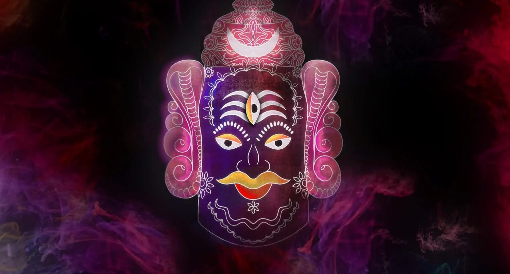

24 gifts from Aadhar.
-
The Gateway Drug to Classical Music - This is personal playlist of a russian investor Vitally. this has supported a lot in 2023 when I underwent a surgery. In one word, its beautiful.
https://open.spotify.com/playlist/1tfsohjLty6IK2b2B8AGE0
-
How to Get Rich - I have listened this 3 hrs podcast approx more than 100 times . This gave me mental models to live life. Dont be fooled by the catchy title. Its deep.
https://nav.al/rich
-
The making of an american capitalist by Rodger Lowenstein. Please Read it . Also watch below Buffet's lecture . Its life changing:
https://www.youtube.com/watch?v=7Z6x-Ov1smU
-
I watch Youtube in discord desktop app which makes it add free and there no next video to jump to.
-
Notion Calender for Desktop - try it . Its so much better than G cal.
-
If you are a IT guy/gal , please :
- i. Use a monitor at home AND office.
- ii. At home , get a electric sit stand desk . Your productivity will sky rocket and its not that much costly as well. You will be able to get the value of its purchase in next 6 months.
- iii. Use this as productivity music. It works. 40 hz binaural beats :: https://www.youtube.com/watch?v=1_G60OdEzXs
-
Buy Amazon Prime Shopping Edition - which will free you of Amazon Prime Video. Much cheaper. And importantly Because of Free delivery is part of it. Why do you want to spend your hours watching some tv show / series. Shun these things. These are for the masses. Do you want tot be part of the masses ?
-
Read Benjamin Franklin quotes. Its something.
-
Shun Sugar and Social Media of any kind. Even Linkedin.
-
4 AM to 8AM is the productive time of the day for me . Try it.
-
If you can not meditate , just like I cant. Then simply try to spend 30 min daily without doing anything. Try it first thing in the morning.
"All of humanity's problems stem from man's inability to sit quietly in a room alone for 30 min"
-
Watch this interview of Mrunal Thakur . I watched this before Sita Ramam and thought that why is she talking so much like shahrukh without any achievements.
I was proved very wrong very soon by her success.
https://www.youtube.com/watch?v=uwCei8u_XhU
-
Fav Srk Interviews :
- https://www.youtube.com/watch?v=E5VFs02WFFQ
- https://www.youtube.com/watch?v=g3tl7rB_Onc
- https://www.youtube.com/watch?v=onagOVvmrAc
- https://www.youtube.com/watch?v=SQxBE3qSFws
- https://www.youtube.com/watch?v=xuMCWX7zIoM
- https://www.youtube.com/watch?v=FCSZ9YK6FzE - In this the host asks shahrukh why he does not fool around with other young actresses , he said and I quote :
"There is peaceful quality, an inherent calmness which Gauri has. I dont want to be responsible to take this peace away from her"
I was stuneed at his words. At shahrukh's wisdom. I was always very intruiged how coming from simple Delhi family he was able to work with so many (not only beautiful but very high class) actresses like Kajol, Karishma , Rani, Juhi. And he always made them feel safe. Juhi and Shahrukh are still friends. This is not the norm. He had so much clarity at such a young age.
-
This can help in days of sadness. Its a song about mother godess.
https://www.youtube.com/watch?v=FCSZ9YK6FzE
-
Panchi by Jasleen . She is born on the same date and month as me. She is also terribly shy and awkward. I love Jasleen.
https://www.youtube.com/watch?v=0a9OOF10wpA
Maaye Ni
https://www.youtube.com/watch?v=ov9kyXlVzxkAlso
-
This are my 2 fav song from Owl City. It has a healing touch. Listen it at night without eyes closed.
- https://www.youtube.com/watch?v=DavJ9UKS2ps
- https://www.youtube.com/watch?v=e6QiQzf5JGM
-
Listen to Coldplay please if you have not. Start with Paradise, then Yellow, Speed of sound, Clocks. It is something.
Also Who Says by Selena https://www.youtube.com/watch?v=BzE1mX4Px0I
-
Madiha Imam. You can not miss her in this interview. I watched it in covid you want to always have friends like Madiha.
https://www.youtube.com/watch?v=GmA2W7I8cv0
-
You have to go and checkout old interviews of Raveena Tandon. She comes from a producer family but in some dark time , the way she dealt with a betrayal and how real she sprung back as a top actress and a top human being. This was display of real valueset and character. Commendable. I did not expect her to be such a gem . But she is .
https://www.youtube.com/watch?v=j7AGwsr4tTo
-
There is a law of Capital Farm. But this one you need to speak to me to understand . I got this as a gift on 6 Jan'24 from the Sun.
-
Among Chetan Bhagat's books , I loved Revolution 2020 so much. It was his best book. Its a lot of drama and emo but something not to miss.
-
Chor by Justh
https://www.youtube.com/watch?v=Gg48H-lrZHo
-
Ayushman's early interview. I really love this interview and Ayushman. I have even read his book Cracking the Code
https://www.youtube.com/watch?v=0LBlbsP__Ow
-
Jasleen Royal Interviews
- https://www.youtube.com/watch?v=cZC5xRrsohw
